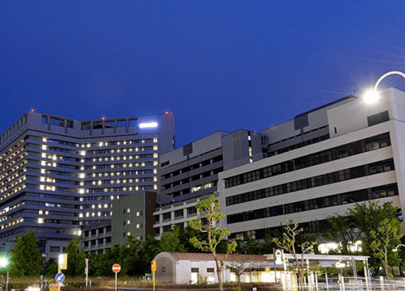
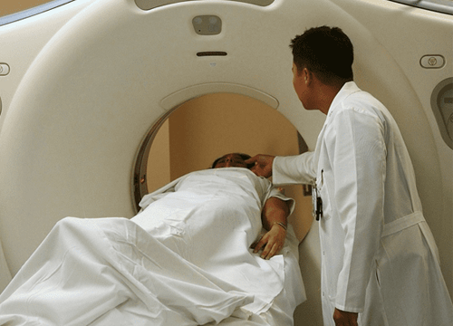

- 
-
우리의 약속(Mission) :
우리는 항상 당신 곁에 있으며,
당신의 아픔을 치유하기 위하여 끊임없이 헌신합니다.
-
최고의 의료진
아주대학교의료원에는 의학과 간호학의 우수한 인재를
양성하는 아주대학교 의과대학·의학전문대학원과
아주대학교 간호대학, 끊임없는 헌신과 도전으로 국내외 명성을 쌓아가고 있는 아주대학교병원, 연구를 통해 진정한 의학발전을 선도하고 있는 첨단의학연구원이 있습니다.
+ 응급의료센터
+ 외상센터
+ 웰빙센터
- 
-
아주대학교병원은 풍부한 임상경험을 겸비한 의료진과 최첨단 인프라를 바탕으로 ‘가장 안전하고 친절한 환자중심병원’으로 거듭나고자 최선의 노력을 하고 있습니다. 우리는 의료 사각지대에 놓인 저소득층 환자와 외국인 노동자의 진료비를 지원하고 점차 사회 공헌활동의 영역과 범위를 확대해 나갈 예정입니다.